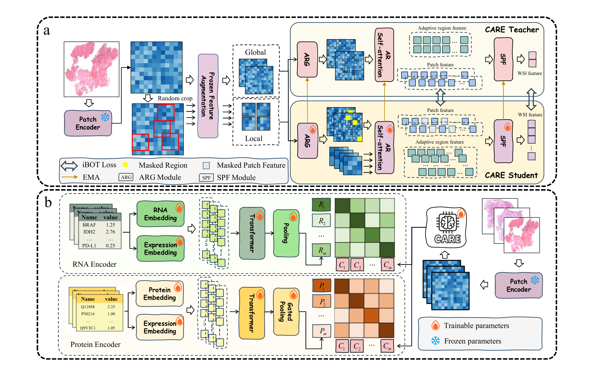
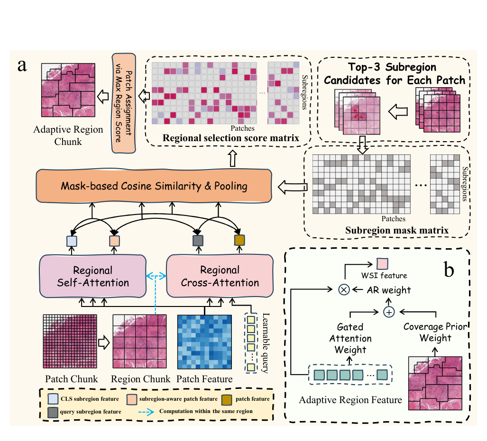
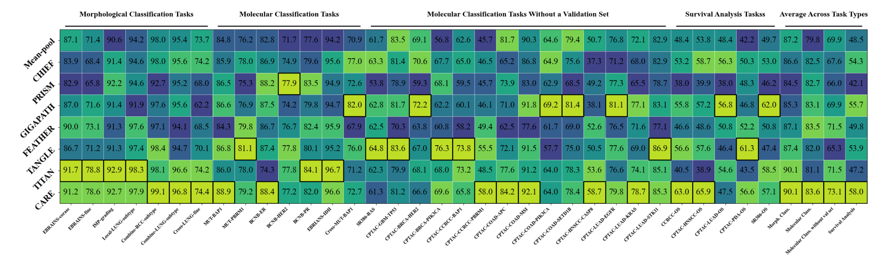
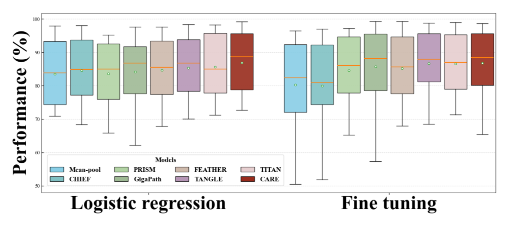
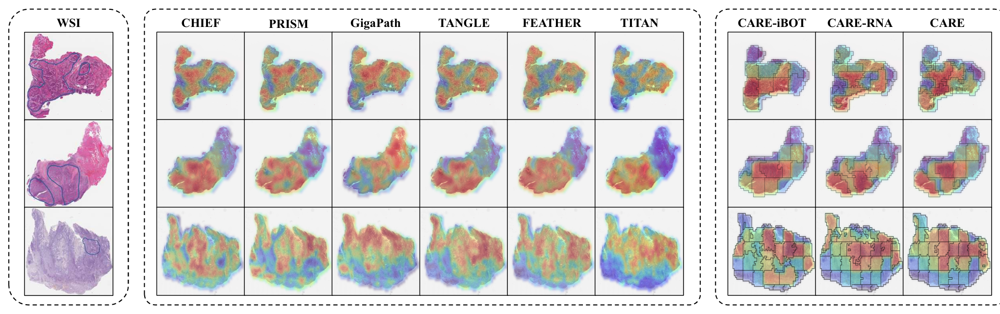

CARE 深读：把全切片切成“会呼吸的”自适应区域，凭什么只用 1/10 数据、还让区域分割不塌缩？
导读。一张病理全切片（WSI）有上万个 patch，但病理医生读片不是逐格扫，而是先把一整块形态连贯的组织圈成 ROI 再判读。可现有病理基础模型继承的是自然图像 backbone：要么 patch 分块（像字符级 token，太碎、看不远），要么固定网格切区域（像定长分块，broad 却语义错位）——两种都用人为网格硬切组织，把一片连贯结构切断。CARE 的核心赌注是把“切区域”这件事本身变成可学习的：让每个 patch 软归属到若干候选子区域、再按“语义×空间”得分重新聚成形状不规则但形态连贯的自适应区域（adaptive region），像 NLP 里的 word-level token。但一旦“分区”可学，立刻冒出两道坎：(a) 所有 patch 会不会一股脑塌缩到最近的那个区域？（CARE 用 Region Structuring Loss 顶住）(b) 没有人工区域标注，凭什么相信学出来的区域“在生物学上是对的”？（CARE 用配套的 RNA / 蛋白分子谱做跨模态对齐来“盖章”）。立题问题因此很具体：当“怎么切片”从固定规则变成可学习模块，怎么保证它既不塌缩、又真的对齐了组织生物学——并且只用主流模型 1/10 的数据就把这件事做成？
zdipath/CARE）。
1. 核心问题：分区方式被 backbone 锁死，谁来学“怎么切片”？
WSI 是 gigapixel 级，原生分辨率端到端训练不现实，所以主流做法都是：组织分割→切 $p\times p$ patch→patch 编码器抽特征→聚合成 slide 表示。问题出在“聚合”这一步默认从 patch 直接跳到 WSI：上万个 patch 之间要建长程交互，聚合器既难学、又数据饥渴。
问：既然病理医生读片是“先定位 ROI、再判读”，为什么基础模型普遍没有显式的 ROI 概念？
引导：看现有三类做法各自的代价。全局自注意力（TITAN 类）在所有 patch 上做 $\mathcal{O}(N^2)$ 交互，算不动也学不稳；线性注意力（ABMIL 类）省了算力但把空间结构压平；固定规则分区（HIPT 类规则 region）引入了 patch→region→WSI 的层级，本该最贴组织结构，可“切”的方式是死网格——一格里可能混了肿瘤+正常+间质，语义被搅在一起。
答：层级（patch→region→WSI）本身是对的方向——它能避免长程交互、提升数据效率、贴合组织结构；真正没做好的是“region 怎么来”。固定网格让 region 粗糙、语义弱，所以 patch–region–WSI 这条路线一直没成主流。CARE 的判断是：把“分区”从规则变成可学习模块（ARG），让区域形状随组织形态自适应，层级路线才真正立得住。
2. 贡献拆解：作者明确提出了什么？
作者明确提出的贡献（论文 §1 三条）：
- CARE 这个病理基础模型 + 两阶段对齐配方。先自监督预训练，再把 slide 特征对齐到 RNA / 蛋白分子谱，用分子信息反过来refine 自适应区域的划分与表示，从而把基础模型训练所需的标注/数据量压到主流的约 1/10。
- 自适应区域生成器（ARG）。把 WSI 切成“不规则却形态连贯”的区域，对齐病理医生 ROI 为中心的工作流，既支持 ROI 级分析、也支持区域聚合后的 slide 级预测。
- 33 个下游任务上的整体领先。在线性探测（linear probing）与微调（fine-tuning）两种 regime 下，CARE 的自适应区域设计 + 预训练流水线都整体优于既有方法。
3. 数据：34,277 张 WSI 学形态，13K 配对分子谱“盖章”，且 1/10 数据本身是主张
CARE 的数据组织对应两阶段训练，且全部用公开队列（TCGA + GTEx）：
| 阶段 | 数据 | 规模 | 作用 |
|---|---|---|---|
| Stage I 自监督 | 全部 WSI（无任何区域分割标注） | 34,277 张 WSI → DBSCAN 拆成 285,710 个 sub-WSI（每个 ≤360 patch） | iBOT 学形态表示，给 Stage II 一个数据高效的初始化 |
| 来源拆分 | TCGA（FFPE H&E）+ GTEx（正常组织） | TCGA 11,463 + GTEx 22,814 | 覆盖肿瘤与正常组织形态 |
| Stage II-a 跨模态 | 配对 WSI–RNA | 13,289 对 | RNA 引导：广覆盖、低特异性的监督，先粗对齐 |
| Stage II-b 跨模态 | 配对 WSI–蛋白 | 8,225 对 | 蛋白引导：高特异性信号，再细化区域边界 |
问：为什么要先 DBSCAN 把整张 WSI 拆成 ≤360 patch 的 sub-WSI？
引导：gigapixel WSI 一张就有上万 patch，自监督预训练的 batch 被迫极小，而小 batch 会削弱 iBOT 这类对比/一致性目标（负样本/统计量不够）。
答：用 DBSCAN 按 patch 坐标聚类，把一张大 WSI 切成若干空间连贯的 sub-WSI（每个 ≤360 patch），34,277 张就变成 285,710 个训练单元——单元小了，有效 batch size 就能放大，iBOT 才训得动。这是“算力现实倒逼数据切分”，不是为了语义。
分子侧 token 化（论文 §3.3.2）：RNA 端由 50 个 Hallmark gene set 选出 3,999 个基因，每个基因 token＝可学习的 RNA-ID embedding ⊕ 表达值 embedding，过 Transformer 后 mean-pool；RNA 编码器用 scGPT 预训练权重初始化。蛋白端取每样本丰度 top-10 的蛋白，同样 ID-embedding ⊕ 表达值 embedding，但用表达加权平均聚合，蛋白 ID-embedding 表由 ESM-2 初始化。
4. Pipeline 与架构：ARG 切区域 → ARSA 区域内自注意力 → SPF 聚合，外挂分子对齐
图 2 是全文骨架。一张 WSI 先经组织分割、切 patch、用冻结的 CONCH v1.5 抽 patch 特征；ARG 把这些 patch 重组成自适应区域；区域内做 ARSA（adaptive region self-attention）得到区域级特征；SPF 把所有区域特征池化成 WSI embedding。整套图像编码器用 iBOT 的 teacher–student 自监督训练（图 2a）；Stage II 再把 WSI embedding 与 RNA / 蛋白 embedding 用 InfoNCE 对齐（图 2b）。
{kind=link}

问：为什么是“先 RNA 再蛋白”这个顺序，而不是一起对齐？
引导：RNA 表达谱覆盖广（几千个基因）但单个信号特异性弱；蛋白丰度谱条目少（top-10）但特异性高、更贴近功能表型。
答：这是一条课程（curriculum）：先用 RNA 做“广覆盖、低特异性”的粗对齐，把区域大致拉到生物学坐标系；再用蛋白做“高特异性”的细化，锐化区域边界。蛋白阶段的 WSI 编码器从 RNA 阶段接着初始化——粗到细、低特异到高特异。
5. 方法：把“怎么切片”写成可微的软路由，再用 RSL 顶住塌缩
这一节按 kexue:su 方法推：先讲为什么需要每个部件、再给式子、每个近似显式标出、关键机制（soft inclusion 与 RSL）从两条独立路径交叉验证。
5.1 从固定子区域到软归属：soft inclusion
动机先行。要让“分区”可学，得先有一个可微的“patch 属于哪个区域”的度量——硬指派（argmin 距离）不可导、也丢掉了“一个 patch 可能介于两区之间”的信息。CARE 先在 patch 网格上铺 $M$ 个不重叠的方形子区域 $S=\{S_i\}_{i=1}^{M}$，每个 $S_i$ 覆盖以 $(x_i,y_i)$ 为左上角的 $k\times k$ 块，并算出该子区域的 CLS-聚合特征 $g_i^{\text{CLS}}$ 与 query-聚合特征 $g_i^{Q}$（图 3a）。
5.2 ARG：top-3 候选 + “语义×空间”得分 + 重指派
有了软归属还不够：纯按距离切，等于回到固定网格。ARG 要让语义也参与。对 patch $j$，先按 $C$ 取空间上最近的 top-K（论文 K=3）候选子区域 $I_j=\text{Top3}_{i}\,C_{ji}$，只在这 3 个候选里算语义相似度，其余 mask 掉（图 3a 的 “mask-based cosine similarity & pooling”）。对每个候选 $i\in I_j$，把 patch 的两种描述子与子区域的两种描述子两两算余弦相似度，堆成 4 维向量 $c_{ji}=[\cos(f_j^{Q},g_i^{Q}),\,\cos(f_j^{Q},g_i^{\text{CLS}}),\,\cos(f_j^{R},g_i^{Q}),\,\cos(f_j^{R},g_i^{\text{CLS}})]$。
{kind=link}

区域内特征怎么来？把区域 $A_i$ 内的 patch 特征序列 $F_i^{AR}$ 前面拼一个可学习 $[\text{CLS}]_i^{AR}$，喂进 ARSA：
5.3 RSL：为什么“可学分区”一定会塌缩，又怎么顶住
问：如果只优化主任务 loss，ARG 会学成什么样？
引导：$w_{ji}=\rho_{ji}\cdot C_{ji}$ 里 $C_{ji}$ 是空间邻近。训练初期语义信号 $\rho$ 还没学好，主任务对“怎么分区”几乎没有梯度偏好——那么 $\arg\max w$ 就被 $C$ 主导，每个 patch 都倾向选空间上最近的那个候选（top-1）。久而久之所有 patch 都黏在最近区域，自适应区域退化回固定网格，甚至塌缩成单一区域。这正是软聚类/路由的经典失败模式。
答：CARE 加一个 Region Structuring Loss（RSL），直接惩罚“总选最近候选”。对 patch $j$、候选 $i$，按 $w_{ji}$ 降序定义 0 起的候选排名 $r_j(i)\in\{0,1,\dots,K-1\}$（0＝得分最大、即最常被选的那个）。
路径 A（机制/反塌缩视角）：把 ARG 看成软路由，$w_{ji}$ 是 patch→区域的路由权重。无约束的路由会走向“赢者通吃”——所有质量集中到少数（这里是最近的）区域。RSL 通过约束“平均排名”等价于鼓励路由分散到 top-K 而非死守 top-1，与 MoE 负载均衡正则、聚类反塌缩约束属于同一类“熵/均衡正则”机制（此为方法学类比，非论文显式主张）。
路径 B（消融经验视角）：表 4 直接量化了 $E^\star$ 的作用——$E^\star=0$（强制固定区域）在 EBRAINS-fine 上 ACC 71.6→69.1、$E^\star=2$（偏最远候选）→69.0，而 $E^\star=0.5$ 取 72.5；$\lambda_{\text{RSL}}$ 也类似（0.1 最优，0.3 反而掉到 71.1）。两端都掉、中间最好，正是“塌缩 ↔ 乱套”之间存在最优松紧度的实证。两条路径结论一致：RSL 不是可有可无的正则，而是“让分区可学”这件事能成立的前提。
5.4 SPF：覆盖先验 ⊕ 门控语义，把区域聚成 WSI 表示
有了一组区域特征 $\{g_i^{AR}\}_{i=1}^{M}$，怎么聚成一个 slide embedding？简单 mean-pool 会被大区域淹没，纯注意力又可能忽视“占地大但重要”的区域。SPF 把两者融合：覆盖先验 $\alpha_i$＝区域 $i$ 占的 patch 比例（大区域权重高），语义权重 $\beta_i$ 用 gated attention 算（重要区域权重高）。
5.5 跨模态对齐：InfoNCE 把区域拉到生物学坐标系
Stage II 用 CLIP 框架。WSI 编码器从 Stage I 初始化；图像侧与 RNA / 蛋白侧各过轻量投影头到共享空间，$\ell_2$ 归一化后用带可学习温度的对称 InfoNCE对齐（先 RNA 再蛋白）。其本质是最大化配对（同一患者的 WSI 与其分子谱）的互信息——于是区域表示被迫携带“能预测分子表达”的生物学信息，区域边界也随之锐化。这一步是“1/10 数据”能成立的支点：分子谱提供了远比纯图像自监督密集的监督信号。
6. 训练配置：两阶段（iBOT → InfoNCE），下游单卡 4090
论文正文给的是结构与关键设定，完整超参表在附录。把能核实的写清楚，缺的标“论文未说明”。
| 项 | 设定 | 备注 |
|---|---|---|
| patch 编码器 | CONCH v1.5（冻结） | 20× 放大、$p\times p$ 滑窗切 patch |
| Stage I 目标 | iBOT（ViT teacher–student，EMA + 在线原型词表） | backbone-agnostic 改造以适配 gigapixel WSI |
| Stage I 数据切分 | DBSCAN → sub-WSI（≤360 patch） | 34,277 WSI → 285,710 sub-WSI，撑大有效 batch |
| 特征增强 | frozen feature augmentation | 特征空间扰动：亮度缩放 / 对比度 / posterization 量化（无像素增强） |
| Stage II 目标 | 对称 InfoNCE（可学习温度） | 先 WSI–RNA、再 WSI–蛋白 |
| RNA 编码器 | scGPT 初始化；3,999 基因（50 Hallmark gene sets） | ID ⊕ 表达 embedding → Transformer → mean-pool |
| 蛋白编码器 | ESM-2 初始化（ID-embedding 表）；top-10 蛋白 | ID ⊕ 表达 → Transformer → 表达加权平均 |
| 下游评测硬件 | 单张 RTX 4090 | linear probing 与 fine-tuning 两种 regime 均在 4090 |
| 关键超参 | $k=8$、$\lambda_{\text{RSL}}=0.1$、$E^\star=0.5$、$\lambda_{\text{SPF}}=0.5$ | 由消融选定（表 4） |
| 预训练卡数 / 墙钟 / epoch | 论文未说明（正文未披露；附录给额外超参） | 因此本页不估 GPU-hours |
关于“1/10 数据”：论文反复用“约主流模型 1/10 或更少的预训练数据”这一相对量来表述，未给绝对 GPU-hours。任何换算都只能是“按论文披露数字粗略估算，不等同于实际账单”，本页不做这种换算。
7. 实验：33 任务三类（形态分类 / 分子预测 / 生存分析）逐表看
判断：三类任务测的是同一件事——“一个学了自适应区域 + 分子对齐的表示，能不能同时撑住形态判别、分子预测、与时间-事件预后”。对手是 7 个代表性 slide-level 基础模型（Mean-pool / CHIEF / PRISM / GigaPath / TANGLE / FEATHER / TITAN），两种 regime（LR/kNN 线性探测、FT 微调）。
| 任务类 | Head | Mean-pool | CHIEF | PRISM | GigaPath | TANGLE | FEATHER | TITAN | CARE |
|---|---|---|---|---|---|---|---|---|---|
| 形态分类 | LR | 81.2 | 80.2 | 75.6 | 78.3 | 80.9 | 81.1 | 85.4† | 85.7★ |
| kNN | 73.5 | 71.4 | 68.9 | 67.8 | 75.2 | 72.2 | 83.1★ | 82.3† | |
| FT | 82.6 | 78.0 | 81.4 | 84.9 | 86.1 | 86.7† | 87.7★ | 87.0 | |
| 分子预测 | LR | 67.1 | 66.3 | 69.1† | 66.6 | 69.1† | 67.6 | 67.8 | 69.5★ |
| kNN | 64.5 | 62.7 | 65.2 | 62.0 | 65.9† | 64.6 | 66.9 | 68.0★ | |
| FT | 70.9 | 73.4 | 73.2 | 73.5 | 74.2 | 75.6★ | 71.7 | 74.7† | |
| 分子预测V | LR | 62.7 | 58.8 | 60.5 | 62.8† | 60.3 | 59.6 | 62.5 | 64.9★ |
| kNN | 55.4 | 55.8 | 54.4 | 55.6 | 57.1† | 54.9 | 57.1† | 57.3★ | |
| 生存分析 | linear | 48.5 | 54.3† | 42.1 | 55.7† | 49.8 | 53.9 | 47.2 | 58.0★ |
问：CARE 强在哪、又在哪没赢？
引导：把表 1 按列读。
答：CARE 的优势集中在分子预测与生存分析——LR 下分子 69.5（次优 69.1）、无验证集子集 64.9（次优 62.8）、生存 C-index 58.0（次优 GigaPath 55.7，领先约 2.3）。这与“分子引导预训练”的机制自洽：表示里本就被灌进了分子信息。形态分类上 CARE 与 TITAN 几乎并列（LR 85.7 vs 85.4 略胜；kNN/FT 略负于 TITAN）——TITAN 用了远多于 CARE 的纯图像数据，CARE 用 1/10 数据打平形态、还反超分子/生存，正是论文要支撑的“数据效率 + 生物学相关性”。
图 4 是 33 个任务的逐任务 AUC/F1 热力图（LR regime，黑框＝该任务最佳）；图 5 是把所有形态+分子分类任务聚合的箱线图。逻辑回归下，作者报告 CARE 在 28 个 LR 评测里 7 项第一、15 项第二；按 AUC（多类用 F1、生存用 C-index）在 33 个基准里 12 项第一、9 项第二。
{kind=link}

{kind=link}

| 任务 | Slide-feature | ROI-feature | ||
|---|---|---|---|---|
| ACC | AUC | ACC | AUC | |
| CCRCC-BAP1 | 58.7 | 65.8 | 61.0 | 69.1 |
| HNSCC-CASP8 | 51.7 | 58.7 | 53.7 | 61.5 |
| Cross-LUNG-subtype | 52.5 | 77.0 | 56.4 | 81.2 |
表 2 验证 ROI 概念的价值：在这三个依赖局部信号的任务上，用“最大 SPF 权重区域”当 ROI 特征做线性探测，全面优于用整张 slide 特征。但论文也诚实标注：ROI 特征并非在所有任务上都更好——依赖全局上下文的任务，整张 slide 表示反而更强或持平（§4.2 明说）。
{kind=link}

8. 消融：ARG 每个部件都不能拿掉，超参两端都掉、分子两阶段各加一截
消融回答三个问题：ARG 是否必要、超参怎么选、两阶段预训练各贡献多少。
| 方法 | EBRAINS-fine ACC | EBRAINS-fine F1 | BCNB-HER2 ACC | BCNB-HER2 AUC |
|---|---|---|---|---|
| Not adaptive region（固定区域） | 71.6 | 73.4 | 61.4 | 75.0 |
| 去掉 $g_i^{\text{CLS}}$ 描述子 | 71.5 | 71.9 | 58.9 | 73.8 |
| 去掉 $g_i^{Q}$ 描述子 | 71.2 | 71.7 | 61.9 | 74.5 |
| 去掉 $f_i$（patch 特征） | 70.1 | 69.9 | 61.6 | 75.6 |
| 去掉 $f_i^{R}$（区域感知 patch 特征） | 70.8 | 71.2 | 59.6 | 75.4 |
| CARE（全） | 72.5 | 74.2 | 64.8 | 75.4 |
表 3 的读法：把固定区域换回去（首行）就掉一截，证明“自适应”本身有用；再逐一删掉 ARG 的四种描述子/特征，几乎每项都掉——尤其 BCNB-HER2 的 ACC 从 64.8 跌到 58.9–61.9。唯一例外是 BCNB-HER2 的 AUC 在“去掉 patch 特征”时反而 75.6 略高于全模型 75.4（ACC 却低），属噪声范围内的单指标波动。
| 超参 | EBRAINS-fine ACC | EBRAINS-fine F1 | BCNB-HER2 ACC | BCNB-HER2 AUC |
|---|---|---|---|---|
| 窗口 $k=6$ | 71.2 | 73.4 | 59.4 | 73.3 |
| 窗口 $k=8$ | 72.5 | 74.2 | 64.8 | 75.4 |
| 窗口 $k=10$ | 71.9 | 73.9 | 61.9 | 75.1 |
| $\lambda_{\text{RSL}}=0.01$ | 72.1 | 73.4 | 60.2 | 74.7 |
| $\lambda_{\text{RSL}}=0.1$ | 72.5 | 74.2 | 64.8 | 75.4 |
| $\lambda_{\text{RSL}}=0.3$ | 71.1 | 72.8 | 58.6 | 73.1 |
| $E^\star=0$（固定区域） | 69.1 | 70.0 | 63.9 | 74.7 |
| $E^\star=0.5$ | 72.5 | 74.2 | 64.8 | 75.4 |
| $E^\star=2$（偏最远候选） | 69.0 | 71.7 | 59.1 | 74.5 |
| $\lambda_{\text{SPF}}=0$（纯语义） | 70.6 | 72.5 | 62.5 | 74.4 |
| $\lambda_{\text{SPF}}=0.5$ | 72.5 | 74.2 | 64.8 | 75.4 |
| $\lambda_{\text{SPF}}=1$（纯覆盖先验） | 71.2 | 72.7 | 60.0 | 72.7 |
表 4 把 §5 的两条机制论证落到数字上：$E^\star$ 与 $\lambda_{\text{SPF}}$ 都呈“两端掉、中间最优”。$E^\star=0$/$E^\star=2$ 双双掉到 69（对应 5.3 的“塌缩 ↔ 乱套”），$\lambda_{\text{SPF}}=0$/$=1$ 也都次优（对应 5.4 的“纯语义/纯覆盖都不够”）。这是消融对机制最干净的交叉印证。
| 阶段 | EBRAINS-fine ACC | EBRAINS-fine F1 | BCNB-HER2 ACC | BCNB-HER2 AUC |
|---|---|---|---|---|
| CARE-iBOT (less, 24K WSI) | 71.5 | 76.5 | 56.9 | 76.8 |
| CARE-iBOT（全量自监督） | 72.2 | 77.4 | 60.3 | 77.0 |
| CARE-RNA（+RNA 对齐） | 73.7 | 78.5 | 59.7 | 76.9 |
| CARE（+蛋白对齐，全） | 74.0 | 78.7 | 59.8 | 77.2 |
表 5 把“两阶段各加一截”说清楚：自监督数据从 24K 扩到全量，EBRAINS-fine ACC 71.5→72.2（scaling 起点更高）；再叠 RNA 对齐 →73.7、叠蛋白 →74.0，逐级上抬，印证“RNA 粗对齐 + 蛋白细化”的课程是有效的。BCNB-HER2 的 ACC 在分子阶段几乎持平（56.9/60.3/59.7/59.8），说明分子引导的增益因任务而异——对脑肿瘤细分类（EBRAINS）帮助明显，对单一受体状态（HER2）帮助有限。
9. 局限与复现门槛：什么时候 CARE 会偏、会漏？
| 边界 | 论文/方法信息 | 读者应如何理解 |
|---|---|---|
| ROI 非万能 | 表 2 之外，ROI 特征在依赖全局上下文的任务上不优于 slide 特征（§4.2 明说） | ROI 的增益限于“局部信号主导”的任务；不能默认 ROI 永远更好 |
| 热力图 ≠ 临床相关 | 图 6：热力图能分肿瘤/正常，但作者明说“对比不保证临床相关性”，需医生标注校验 | 可解释性是“与医生标注吻合”的间接证据，不是临床有效性的证明 |
| 分子增益因任务而异 | 表 5：分子阶段对 EBRAINS 帮助大，对 BCNB-HER2 几乎持平 | 分子引导不是对所有下游一致受益；受任务对生物学信号的依赖程度影响 |
| 依赖配对分子数据 | Stage II 需 WSI–RNA(13,289)/WSI–蛋白(8,225) 配对；预训练绑定 TCGA+GTEx | 复现 Stage II 必须有配对分子谱；纯图像场景只能用到 Stage I 部分 |
| patch 编码器外置 | patch 特征来自冻结的 CONCH v1.5 | CARE 的表示质量上界受 CONCH 约束；换 patch 编码器需重训 |
| 训练账本不全 | 预训练 GPU 卡数 / 墙钟 / epoch 论文未说明（仅给下游单卡 4090） | “1/10 数据”是相对量；无法据此估真实预训练成本 |
| 正文表为均值 | 表 1 是按任务类的平均，33 任务逐项数值在附录（图 4 为热力图） | 个别任务可能落后；整体领先不代表逐任务领先 |
结语：几点学术判断
一句话总结：CARE 把 CPath 里一个被 backbone 写死的环节——“怎么把 WSI 切成区域”——重新做成可学习的软路由：soft inclusion 给空间软归属、top-3 候选 + “语义×空间”得分做重指派、RSL 用“期望排名拉向 $E^\star$”顶住塌缩、SPF 用“覆盖先验 ⊕ 门控语义”聚成 WSI/ROI 表示；再用一条“iBOT 自监督 → RNA 粗对齐 → 蛋白细化”的分子引导课程，把区域拉到生物学坐标系。于是一个仅用约 1/10 数据训成的模型，在 33 个任务上追平最强形态判别、反超分子预测与生存分析。
- “分区粒度”是真正的设计变量。patch＝字符级、固定 region＝定长分块、自适应区域＝词级——把“怎么切”交给模型，层级（patch→region→WSI）路线才立得住。这是图 1 的全部主张。
- 可学分区必然要配反塌缩约束。$w=\rho\cdot C$ 在语义没学好时被空间项主导、会塌到 top-1，所以 RSL 不是装饰：式 4–5 把“平均排名”拉向 $E^\star$，表 4 的“$E^\star$ 两端掉、中间最优”正是塌缩与乱套之间存在最优松紧度的实证。SPF 的 $\lambda_{\text{SPF}}$ 同理。
- 分子谱是“免费的高质量监督”，但不是万能。它让 1/10 数据够用、让区域更贴生物学（图 6、表 5），但增益因任务而异（HER2 几乎持平），且 Stage II 复现绑定配对分子数据。优点与门槛同源。
留给后续的两条反驳/验证路径：(a) RSL 的“反塌缩”与 MoE 负载均衡是否真同源——可在同一 ARG 上换成熵正则/均衡损失做等价对照，验证“期望排名约束”是否最优实现；(b) “1/10 数据”的功劳到底归分子监督还是归自适应区域——表 5 已分离出“iBOT 全量 vs RNA vs 蛋白”三截，但缺“无分子、纯放大 iBOT 数据到主流量级”的对照，补上才能坐实“是分子引导省了数据，而非架构本身就更省”。
资料来源与图像说明
- Di Zhang, Zhangpeng Gong, Xiaobo Pang, Jiashuai Liu, Junbo Lu, Hao Cui, Jiusong Ge, Zhi Zeng, Kai Yi, Yinghua Li, Si Liu, Tingsong Yu, Haoran Wang, Mireia Crispin-Ortuzar, Weimiao Yu, Chen Li, Zeyu Gao. CARE: A Molecular-Guided Foundation Model with Adaptive Region Modeling for Whole Slide Image Analysis. CVPR 2026 / arXiv:2602.21637v3（西安交通大学 · University of Cambridge · KingMed · BGI Research · A*STAR）。代码：
github.com/zdipath/CARE（HTTP 200，已核验）；CVF：openaccess.thecvf.com 对应页（HTTP 200，已核验）。 - 本文公式（式 1–7 选录）、表格（表 1–5）与全部实验数字以 arXiv PDF 为准：soft inclusion（式 1）、候选 softmax 与区域选择得分（式 2–3）、RSL（式 4–5）、SPF（式 6–7）写法对照原文 §3。表 1 原文用粗体/下划线标最佳/次佳，本页改用 ★/† 标注；表 4/表 5 取代表性行并已在表注说明“完整列见原文附录”。预训练卡数/墙钟/epoch 正文未披露，已标“论文未说明”，故本页不估 GPU-hours。
- kexue:su 方法与归因。第 1、5、8 节“分区粒度为何是设计变量”“soft inclusion 为何要软归属”“可学分区为何必然塌缩、RSL 如何顶住”“SPF 两端为何都次优”的多路径论证，按
kexue:su方法（动机先行、每个近似显式标出、≥2 条独立路径交叉验证）重新推导。本次kexue:su检索未返回与 CARE 机制（自适应区域 / soft inclusion / RSL 反塌缩 / SPF / 分子引导对比预训练）topically on-point 的卡片（注入结果为 DGCNN 信息抽取、VAE 几何视角、seq2seq、信息瓶颈等，主题不符；针对“反塌缩/负载均衡/InfoNCE”的二次检索因该环境未安装 RAG 检索脚本而无法执行）。按归因红线，本页不作任何 [archives/XXXX] 苏剑林归因，仅应用其方法学；§5.3 中“RSL 与 MoE 负载均衡/聚类反塌缩同源”为方法学类比，已显式标注为非论文显式主张、非苏剑林归因。 - 图像说明：图 1–6 为本地 PNG，由
extract_figures.py（PyMuPDF，caption 锚定）从 arXiv PDF 裁切，路径assets/figures/care/，原生分辨率（fig1 1027×769、fig2 2250×1416、fig3 1027×931、fig4 2096×622、fig5 1018×456、fig6 2038×641）。图 2、图 3 含矢量文本面板，已直接采用提取的位图并在图注中转写其“ARG/ARSA/SPF、teacher–student、覆盖先验 ⊕ 门控语义”等关键结构。